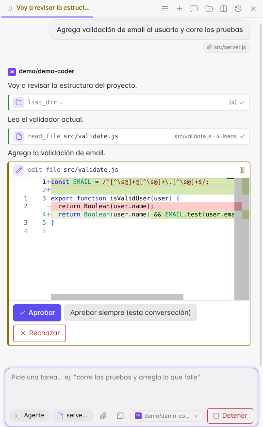
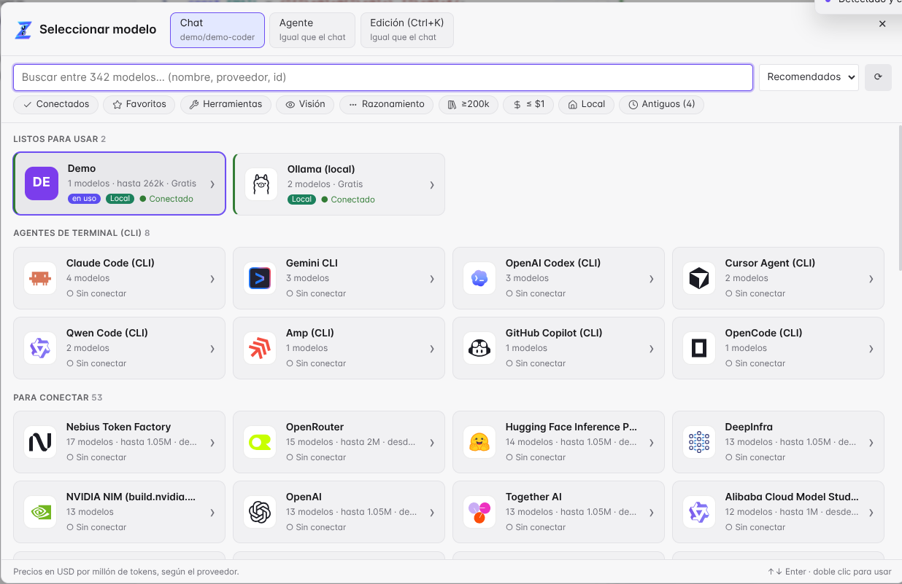
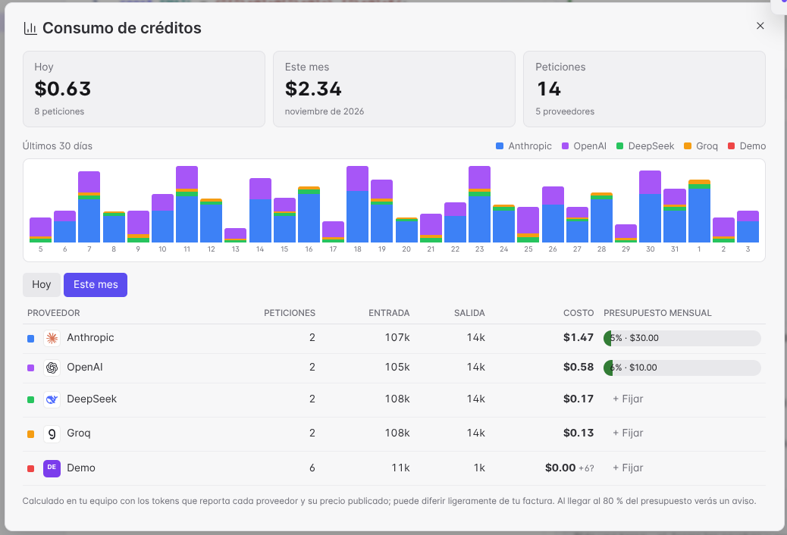
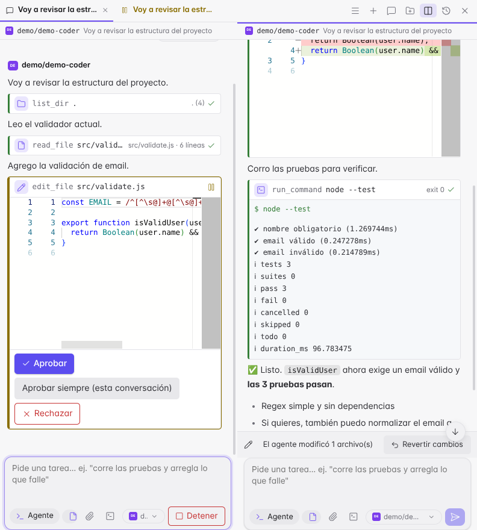

El editor de código que no te casa con ninguna IA.
Claude para lo difícil, DeepSeek para lo de diario, Llama en tu laptop sin internet.
Zinarix Studio conecta 62 proveedores y 311 modelos con su precio a la vista, y su
agente no toca un archivo sin que tú lo apruebes.
El agente agregó validación de email a validate.js, corrió
node --test y dejó listo el botón de revertir.
62
proveedores de IA
311
modelos, cada uno con precio y contexto
$0
si usas Ollama o LM Studio
0
cuentas que crear para usarlo
01
Trae tu propia llave. O ninguna.
Pegas la API key del proveedor que ya pagas y listo. Si no quieres pagar nada, Zinarix
detecta Ollama, LM Studio y vLLM en tu equipo sin configurar nada.
02
Cómo se siente trabajar con él
Nada se escribe sin tu visto bueno.
El agente lee tu proyecto, propone el cambio y te enseña la diferencia línea por
línea. Tú decides: aprobar, aprobar siempre en esta conversación o rechazar.
Cada edición y cada comando esperan tu aprobación
Los comandos peligrosos se bloquean siempre
Un clic deshace todo lo que hizo el agente

Un modelo para cada trabajo.
Uno de razonamiento para el agente, uno de centavos para chatear y uno local para el
código que no debe salir de tu máquina. Filtra por herramientas, visión, contexto o
precio.
Local (Ollama, LM Studio)
gratis
Pequeños (Chutes, Featherless)
desde $0.02 / 1M
Rápidos (DeepSeek, Groq, Flash)
desde $0.10 / 1M
Frontera (Claude, GPT, Gemini Pro)
lo que cobre cada uno

Sabes lo que gastas antes de que llegue la factura.
Lo de hoy y lo del mes, por proveedor, con la gráfica de los últimos 30 días. Ponle
un presupuesto a cada uno y te avisa cuando llegas al 80 %.

Dos IAs, el mismo problema.
Abre dos chats lado a lado y compara cómo lo resuelve cada modelo antes de quedarte
con uno. Con Pro, tantos chats trabajando a la vez como quieras.

Y además
Navegador integrado
El agente abre páginas, hace clic y escribe. Tú lo ves todo en una pestaña.
Modo 100 % local
Bloquea cualquier llamada a la nube. Funciona en un avión.
Llaves en el llavero del sistema
Keychain, Credential Manager o libsecret. Nunca en archivos ni en logs.
Secretos tapados
Los tokens que aparezcan en tu código se ocultan antes de enviarse.
Monaco y terminal
El motor de edición de VS Code, búsqueda global y paleta de comandos.
CLI omni
El mismo agente desde la terminal, para scripts y servidores.
03
Gratis, con todo incluido.
Por ahora Zinarix Studio no cuesta nada: chats en paralelo, varias ventanas y todos los
agentes. Solo le pagas a tu proveedor de IA, o nada si usas modelos locales.
Gratis
US$0
para siempre
Editor completo con cualquier IA y modelos locales
# Ubuntu, Debian, Mint y Pop!_OS instalan el .deb; Arch, Manjaro y EndeavourOS el
paquete pacman; Fedora, openSUSE y el resto, el AppImage en tu carpeta personal.
Ejecuta el instalador. Si SmartScreen muestra un aviso, pulsa
Más información → Ejecutar de todas formas; el instalador aún no tiene
certificado de firma.
Sí. Es código abierto con licencia MIT. Le pagas directamente al proveedor de IA que
elijas, con tu propia llave, o nada si usas modelos locales.
¿Dónde quedan mis API keys?
En el llavero de tu sistema operativo. No hay servidores en medio: la app habla
directo con el proveedor.
¿El agente puede romper algo?
Ves cada edición y cada comando antes de que pase, y nada corre sin tu aprobación.
Los comandos peligrosos se bloquean siempre y puedes revertir todo con un clic.
¿Funciona sin internet?
Sí, con Ollama, LM Studio, vLLM o llama.cpp. Activa el modo 100 % local y ninguna
petición sale de tu equipo.
¿Cómo sé cuánto voy gastando?
El panel de consumo calcula lo de hoy y lo del mes por proveedor con los tokens que
reporta cada uno, y te avisa al 80 % de tu presupuesto.
¿Por qué Windows o macOS me advierten al instalar?
Los instaladores todavía no tienen firma de código. Puedes revisar el código y los
scripts en GitHub, y el instalador por terminal verifica la suma SHA-256.
Ábrelo, pega una llave y pídele algo a tu proyecto.